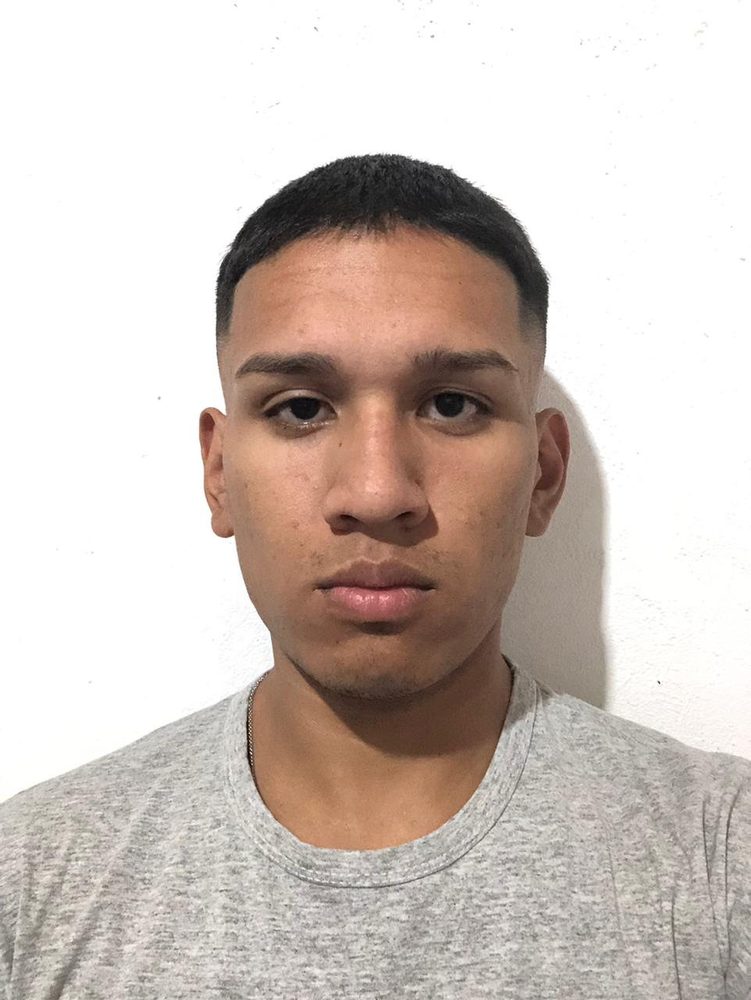

<section class="acerca-section">
    <div class="container">
        <div class="row align-items-center">
            <div class="col-md-6">
                
            </div>
            <div class="col-md-6">
                <h1 class="acerca-title">Avila Marcos Antonio</h1>
                <h2 class="acerca-subtitle">Full Stack Developer Jr</h2>
                <p class="acerca-text">Mi primer contacto con la programación fue en la secundaria, utilizando Python.
                    Luego me interesé por JavaScript, HTML y CSS cursado en UTN, profundizando en ellos a través de cursos y prácticas
                    por cuenta propia. Actualmente estoy cursando el primer año de la tecnicatura en programación en
                    Teclab.</p>
            </div>
        </div>
    </div>
</section>